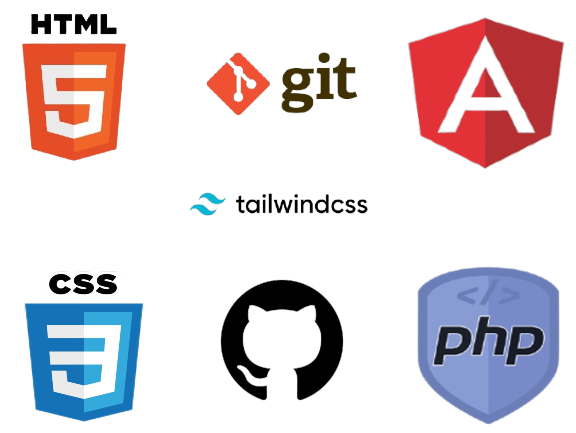

 <!-- About Host Section -->
 <div id="host" class="bg-white py-6 sm:py-8 lg:py-12">
  <div class="mx-auto max-w-screen-xl px-4 md:px-8 mt-10">
    <!-- text - start -->
    <div class="mb-8 md:mb-10">
      <h2 class="mb-4 text-center text-3xl font-bold text-gray-800 md:mb-6 lg:text-3xl">About Me</h2>
    </div>
    <!-- text - end -->

    <div class="grid grid-cols-1 gap-4 sm:grid-cols-2 p-8">
      <!-- stat - start -->
      <div class="flex flex-col items-center justify-center rounded-lg p-4 lg:p-8">
        
      </div>
      <!-- stat - end -->

      <!-- stat - start -->
      <div class="flex flex-col rounded-lg sm:p-8 p-4">
        <div class="text-xl font-bold text-indigo-500 sm:text-2xl md:text-3xl">Rizki Apriliantono</div>
        <div class="text-sm font-semibold sm:text-base mb-6 mt-2">Application Developer Specialist</div>

        <p class="text-base font-serif text-gray-500 text-justify sm:leading-relaxed sm:mr-8 mb-8 mt-8">
          I work as an Application Development Specialist team. I have an interest in the IT world in developing websites to support industrial development in the 4.0 era. I currently work in the IT Transformation field which is responsible for developing at PT Surya Madistrindo which is engaged as a Tobacco Distribution Company for Gudang Garam Company. I am a very passionate person who likes to develop and be responsive in building a webtesite application. I have experience as a Frontend Developer and Backend Developer for more than 1 year, apart from being a Frontend and Backend Developer I am also experienced as a Data Engineer in processing data that will be used by the Backend to integrate with the website.
        </p>
        <p class="hidden md:text-justify md:block text-base font-serif text-gray-500 leading-relaxed sm:mr-8 mb-12">
          In addition, during my work I also learned about businesses related to the application or website module that I created, during my current work I have learned applications made to support office management activities for all employees and also during my work I also learned and gained knowledge about soft skills on how to speak well and efficiently and accurately to others, learned about solving problems well and managing time well and effectively at work.
        </p>
<!-- social - start -->
        <div class="flex gap-4">
          <a href="https://www.instagram.com/rizki_apriliantono/" target="_blank" class="text-gray-400 transition duration-100 hover:text-gray-500 active:text-gray-600">
            <i class="fa-brands fa-instagram fa-xl"></i>
          </a>

          <a href="https://id.linkedin.com/in/rizkiapriliantono" target="_blank" class="text-gray-400 transition duration-100 hover:text-gray-500 active:text-gray-600">
            <i class="fa-brands fa-linkedin fa-xl"></i>
          </a>

          <a href="https://github.com/rizkiapriliantono/" target="_blank" class="text-gray-400 transition duration-100 hover:text-gray-500 active:text-gray-600">
            <i class="fa-brands fa-github fa-xl"></i>
          </a>
        </div>
        <!-- social - end -->
            </div>

          </div>
        </div>
      </div>
